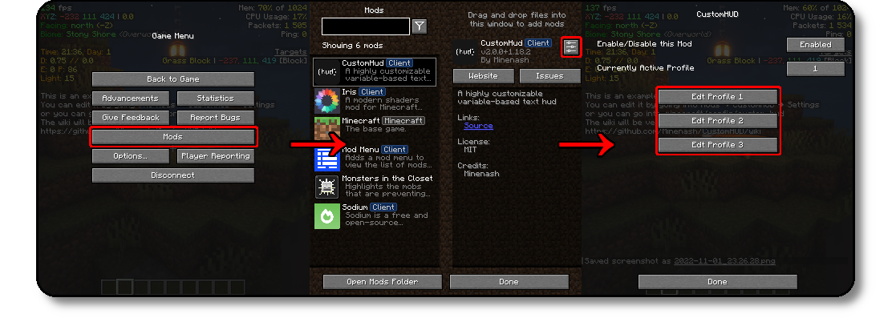

Getting Started
This page will help you get started with CustomHud
Step 1: How do I edit profiles?
Via your File Browser
The profiles are located at .minecraft/config/customhud/profiles
Via Modmenu (Recommended)
Click on Mods → CustomHud → Settings Button → Edit Profile 1/2/3
Step 2: Displaying your first text
Step 2a: Start Fresh
We're going to be starting from scratch. You can either pick a profile that is blank, or delete the contents of one
Step 2b: Normal Text
Almost anything you write will be displayed verbatim, the major exceptions are stuff inside {}s and & followed by the next character.
So lets go ahead write something
Hello World
Step 3: Variables
Variables produce a value, like fps, xyz, biome, etc
Syntax: {<variable_name> [flags]}
Examples: {fps}, {x}, {biome}, {ping}
Step 3a: Basics
For now, we will skip flags. Let's create a profile that shows our fps, coordinates, and biome.
{bx}, {by}, {bz} are the player's block coordinates.
fps: {fps}
xyz: {bx} {by} {bz}
biome: {biome}

Step 3b: Variable Flags
Variable Flags allow you to customize the output of certain variables.
In the reference linked in 3a, the last column shows what variable flags
can be used for that variable.
(Use the reference from 3a for which flags each variable supports)
For this example, let's use the String variable flags.
- -uc - Uppercase
- -lc - Lowercase
- -tc - Titlecase
- -sc - Small Caps
{facing} - Default
{facing -uc} - Uppercase
{facing -lc} - Lowercase
{facing -tc} - Titlecase
{facing -sc} - Small Caps
{facing -tc -sc} - Titlecase + Small Caps
Step 4: Colors
Let's add color to the profile we made in 2b!
Bukkit Color Codes
CustomHud supports Bukkit Color codes

Custom Colors
Syntax:&{#AARRGGBB} (AA - Alpha, RR - Red, GG - Green, BB - Blue) Example:
&{FFFF0000} (Pure Red)
Use this if you want a specific color and you have the hex code for it. Just don't forget the first two digits is the opaqueness of the text.
Step 4a: Adding color to the profile we made in 2b
fps: &a{fps}
xyz: &c{bx} &a{by} &b{bz}
biome: &e{biome}